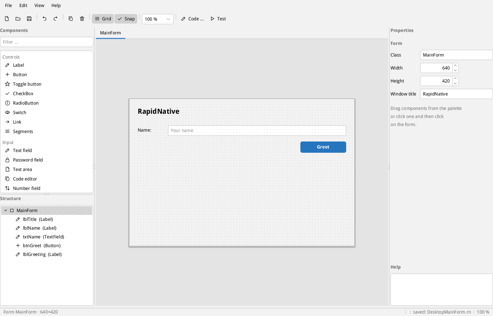
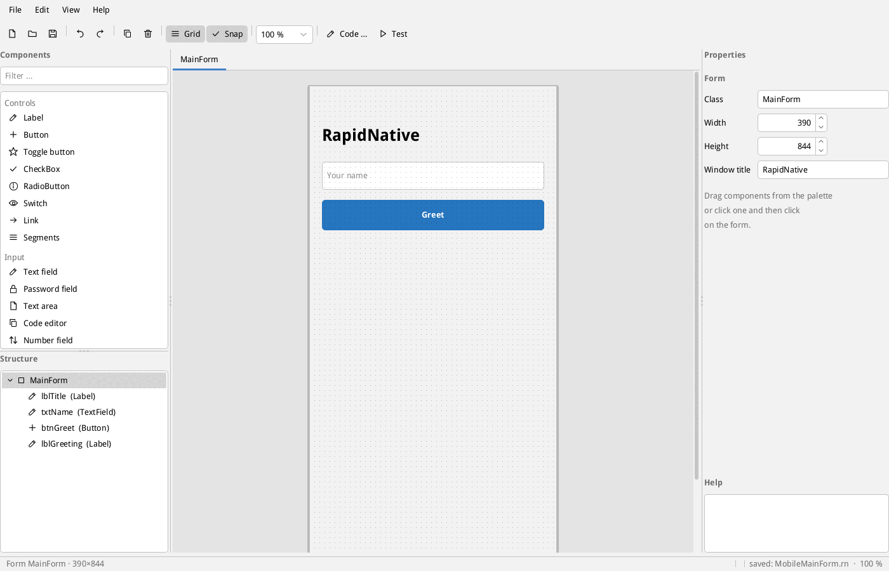
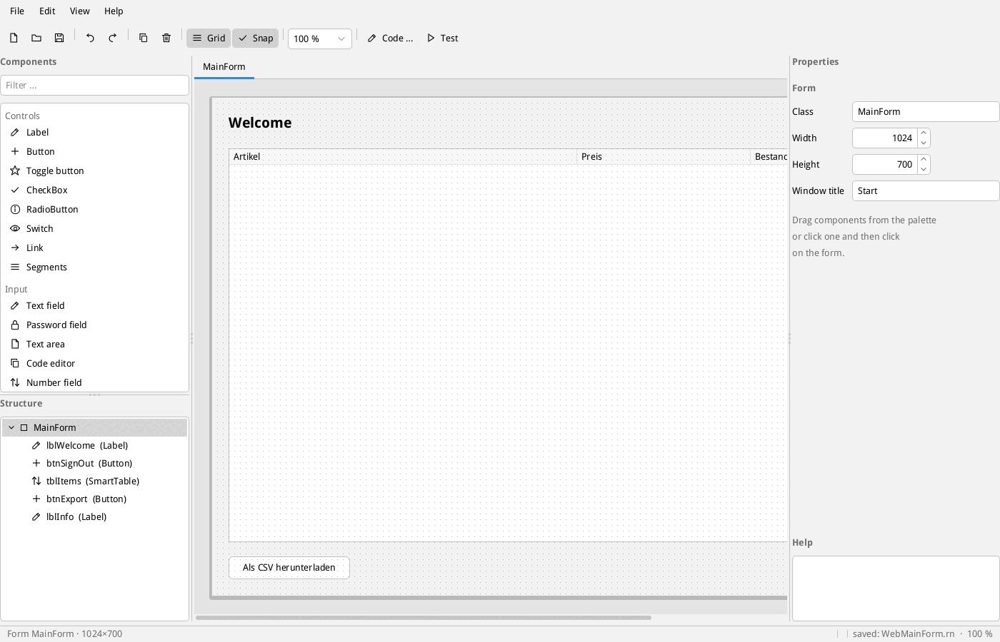
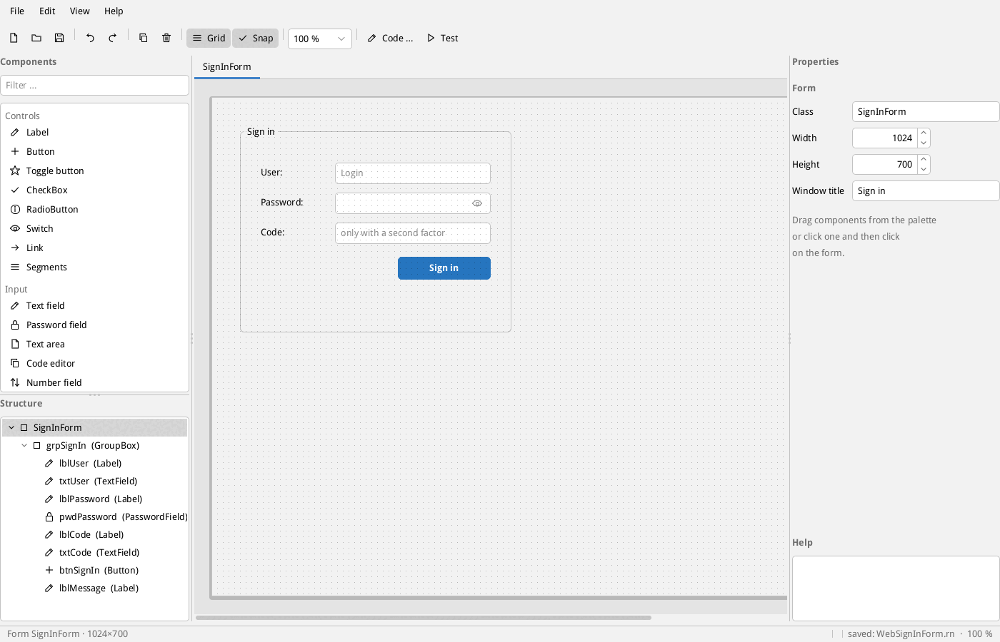
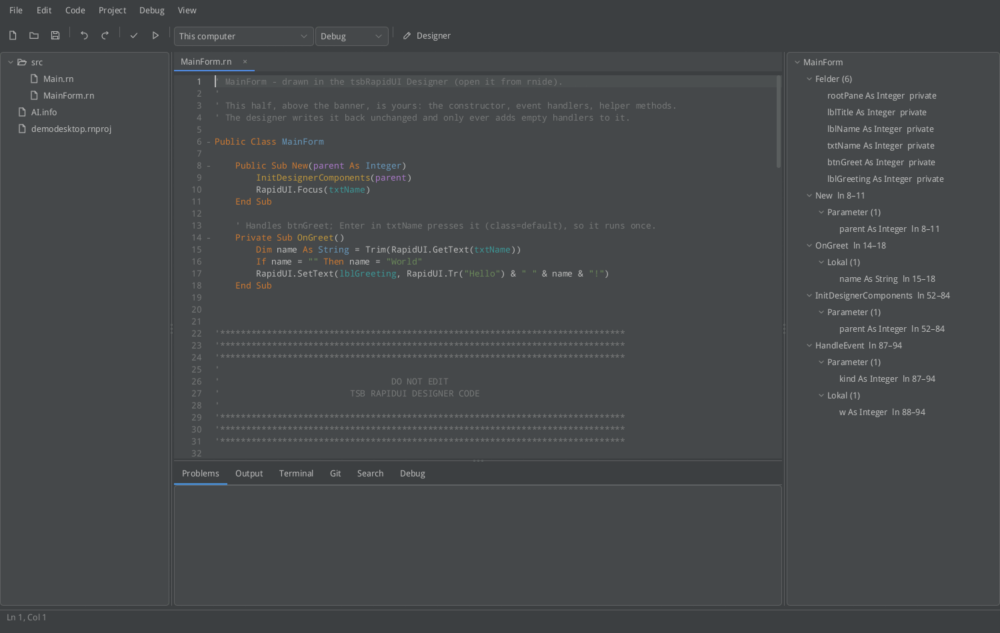
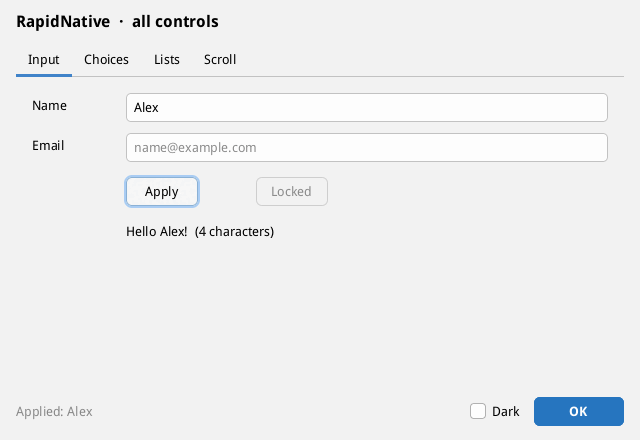
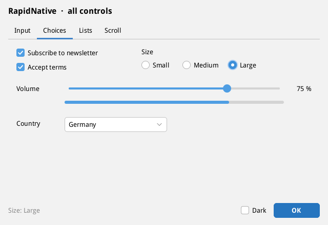
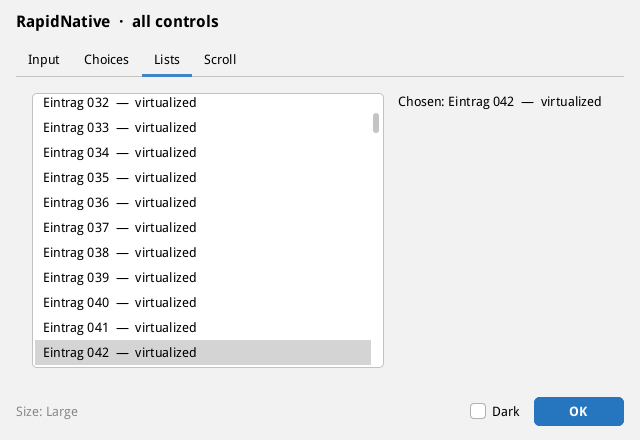
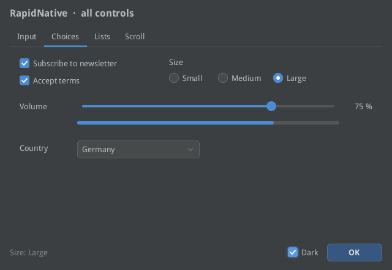
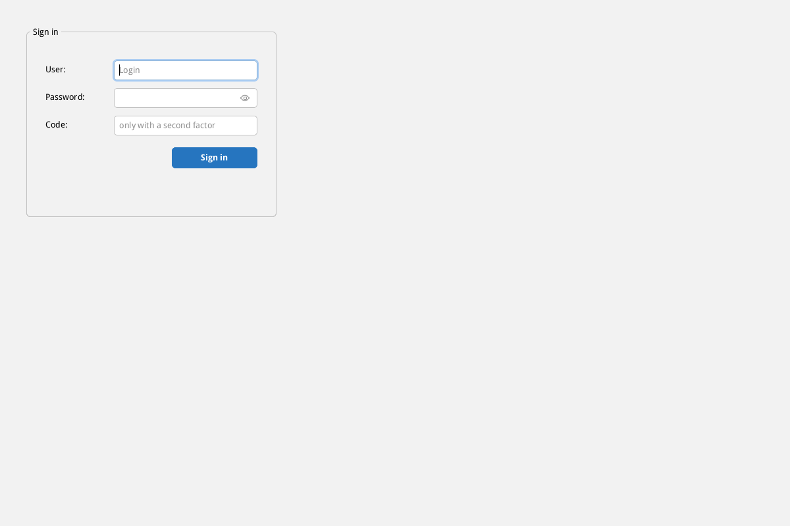

RapidNative is a Visual Basic style language with its own compiler. It compiles through LLVM to machine code, with no virtual machine and no garbage collector. Memory errors and data races fail at compile time.
WindowsmacOSLinuxAndroidiOSWebWebAssemblyESP32Bare Metal
Familiar to anyone who knows Visual Basic or Xojo, with the guarantees of Rust. Every example below is real RapidNative code.
Module Main
Sub Main()
Print "Hello from RapidNative!"
Dim i As Integer
For i = 1 To 3
Print i & " squared is " & i * i
Next i
End Sub
End ModuleDim a As String = "x" & "y" Dim b As String = a ' a has now moved Print a ' error RN2001: 'a' was moved and has ' no value here ... Dim c As String = Clone(b) ' deep copy
Dim price As Decimal = CDec("19.99")
Dim total As Decimal = price * 3
Print total ' 59.97
Print CDec("0.1") + CDec("0.2") = CDec("0.3")
' True: exact, no rounding errorsDim d As New Date(2024, 2, 29) Print d.AddMonths(12).ToSQL() ' 2025-02-28 Print d.DayOfWeek() ' 4 (Thursday) Dim t As DateTime = DateTime.Now() Print t.ToSQL()
Module Main
Dim Total As Locked Long
Sub Work(n As Integer)
SyncLock Total
Total = Total + n
End SyncLock
End Sub
End Module
' Without Locked: error RN2300' {name} becomes a parameter, never SQL text
Dim rows = db.Query(
Sql"SELECT * FROM patient WHERE name = {name}")
' Database methods do not accept a String.
' The compiler checks the type of every {...}.Function Parse(t As String) As Integer Throws
If t = "" Then Throw New Exception("empty", 1)
Return CInt(t)
End Function
' Unhandled call: error RN2401Enum Shape
Circle(Radius As Double)
Square(Side As Double)
End Enum
Select Case s
Case Shape.Circle(r)
Print 3.14 * r * r
Case Shape.Square(a)
Print a * a
End Select
' A missing case: error RN2601Classes, interfaces, generics and polymorphism are part of the core language. Inheritance, properties and events live in compat mode (Option Compat On), fully supported and meant for programs coming from Xojo.
One visual editor for every platform. Drag components onto the form, every property is explained, and the structure sits in a tree on the left. The result is plain source code that Git understands.



Your code goes on top, the designer's part below. The designer reads the form from the @rapidui lines and leaves everything above the banner untouched.
Public Class MainForm
Public Sub New(parent As Integer)
InitDesignerComponents(parent)
End Sub
Private Sub OnGreet()
RapidUI.SetText(lblGreeting, "Hello!")
End Sub
'******************************************************************************
' DO NOT EDIT
' TSB RAPIDUI DESIGNER CODE
'******************************************************************************
' @rapidui form MainForm w=640 h=420 title="Demo"
Private rootPane As Integer
' @rapidui Button btnGreet T=122 R=24 W=130 H=32 text=Greet onAction=OnGreet
Private btnGreet As Integer
...
End Class
rnide is RapidNative's own development environment: an editor with language features, a variables panel, debugger, Git, terminal, project wizard and installer dialog. It is built with tsbRapidUI itself.

Diagnostics as you type, including ownership checks, completion, rename, references.
Breakpoints, variables, call stack, threads. Remote debugging through rnc debug-agent.
rnc package builds .deb, .rpm, a Windows setup and .pkg without third-party tools.
Every project contains what an AI assistant needs: the language, grammar, diagnostics and the exact form layout.
<Test> procedures, a formatter and HTML docs are part of rnc.
SQLite (also encrypted), MySQL/MariaDB, PostgreSQL and Oracle without a client.
All controls, light and dark. The same interface runs on every platform, drawn by its own renderer. These images come from the bundled examples/showcase sample.




One language, one interface, every target. Output is identical everywhere because number formatting and text handling live in RapidNative's own runtime.
| Target | Result | Status |
|---|---|---|
| Linux x64, ARM64, ARMv7 | a single executable | built and run |
| Windows x64 | .exe, Setup | built, run under Wine |
| macOS x64, ARM64 | app, .pkg | built |
| iOS | app through Xcode | tested on a Mac |
| Android ARM64, x64 | .apk without Java or Gradle | built and run |
| Web (Server) | one file is the HTTPS server | tested in the browser |
| WebAssembly | .wasm in the browser | tested in the browser |
| ESP32-C3, -C6 | ESP-IDF component | built, not tested on hardware |
| Bare Metal ARM64, Cortex-M4, x64 | static library | built |
Runtime, user interface, database drivers and TLS are linked in. End users need no runtime and no extra packages.
| Program (Linux x64) | Size | Also needs |
|---|---|---|
| Console | 5.8 MB | system libraries only |
| Desktop GUI with database | 24 MB | system libraries only |
| Web server with HTTPS and database | 23 MB | system libraries only |
rnc build . --target windows-x64 rnc build . --target macos-arm64 rnc build . --target linux-arm64 rnc build . --target android-arm64 --emit apk rnc build . --target web rnc build Blink.rn --target esp32c3 --profile regulated
iOS programs are built on a Mac with Xcode. Signing and notarizing for macOS also happen on a Mac.
rnc new myapp --kind mobile cd myapp # Android rnc build . --target android-arm64 --emit apk # iOS, on a Mac rnc build . --target ios-arm64 --emit lib
With tsbRapidN Web the application runs on the server and every user gets their own session. Program logic and data never leave the server. HTTPS with Let's Encrypt is built in, so no nginx is needed.

RenderMode = pixelsThe server draws and sends only the changed areas.
RenderMode = vectorThe browser draws, using the same renderer as WebAssembly. This saves about half of the server CPU.
Web template, signed-in users, each clicking every 10 seconds. 16 cores, load generator on the same machine. Your own logic per click comes on top.
| Users | Pixels: memory / CPU | Vector: memory / CPU | Click to image (median) |
|---|---|---|---|
| 1,000 | 303 MB / 1.0 cores | 258 MB / 0.5 cores | 14–17 ms |
| 3,000 | 892 MB / 3.8 cores | 756 MB / 2.0 cores | 14–17 ms |
What usually surfaces at the customer is stopped here by the compiler or a defined abort.
| Error | Behaviour |
|---|---|
| Use after move | Compile error RN2001 |
| Data race | Compile error RN2300 |
| Integer overflow | defined abort with file and line |
| Implicit narrowing | Compile error RN0607 |
| Index out of range, Nothing, division by 0 | defined abort |
| SQL-Injection | database methods do not accept a String |
| Starting other programs | only from a list fixed at compile time, without a shell |
These guarantees apply to the core language. Compat mode uses reference counting and is limited to one thread, and C calls through Declare are outside the checks.
A normative language manual with numbered rules, a published anomaly list, a SOUP register and rnc validate with SHA-256 evidence, intended for use under IEC 62304 classes A and B. The regulated profile forbids the heap, recursion and dynamic threads.
Five identical tasks in milliseconds, median of three runs, AMD Ryzen 7 5825U. Python is a single run.
| Task | RapidNative | C#/.NET 10 | Python 3.14 |
|---|---|---|---|
| Recursion, fib(35) | 35 | 56 | 1040 |
| Sieve, 5 million | 40 | 26 | 579 |
| Floating point, 20 million | 60 | 60 | 2008 |
| 2 million objects | 107 | 123 | 649 |
| 1 million strings | 93 | 78 | 186 |
| Total | 335 | 343 | 4462 |
Every rnc version uses exactly one checked toolchain. It is downloaded automatically on first start, every file is verified by SHA-256, and only a complete result becomes active. The same version builds the same way for every developer.
$ rnc toolchain install Downloading toolchain, please wait ... rnc: Zig 0.16.0 and 15 package(s), 643 MB rnc: installing ... Thanks for waiting. The toolchain is ready.
Packages: rapidnative-toolchain. For machines without internet there is rnc toolchain import.